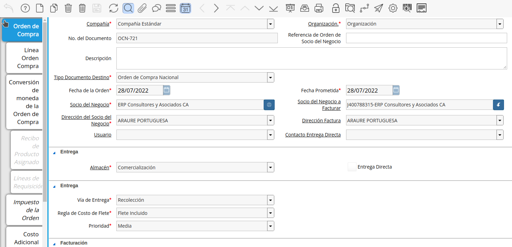
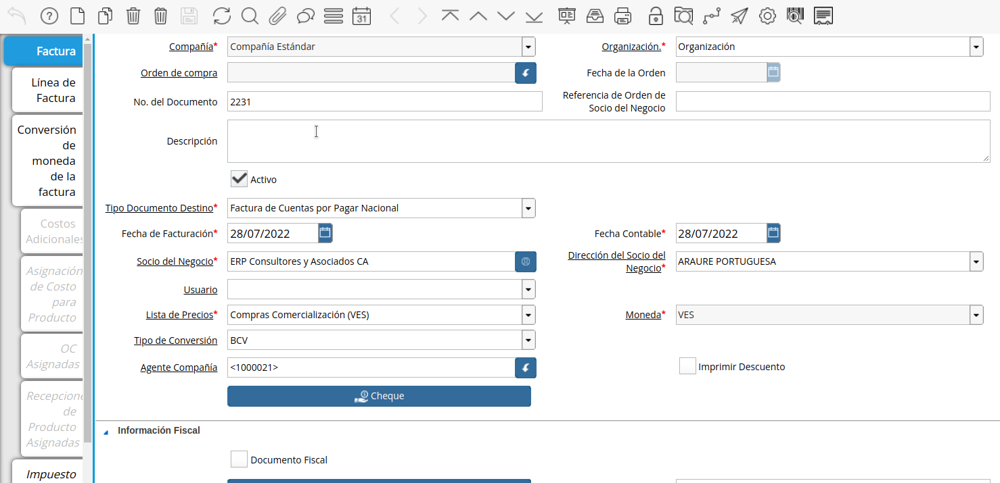
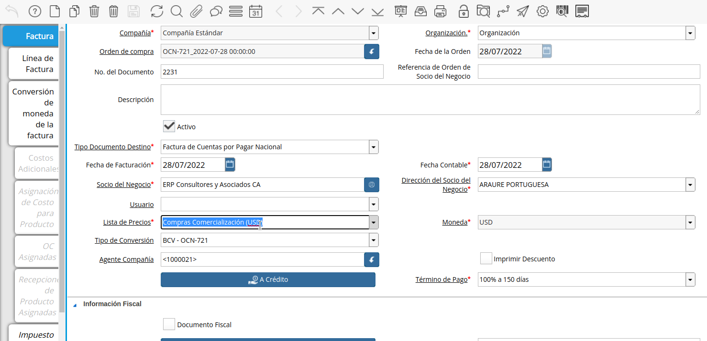
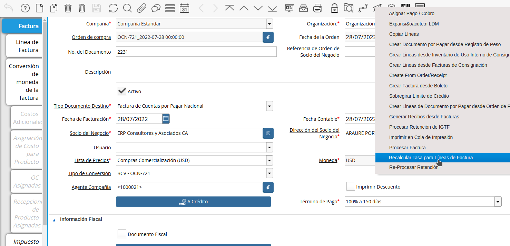
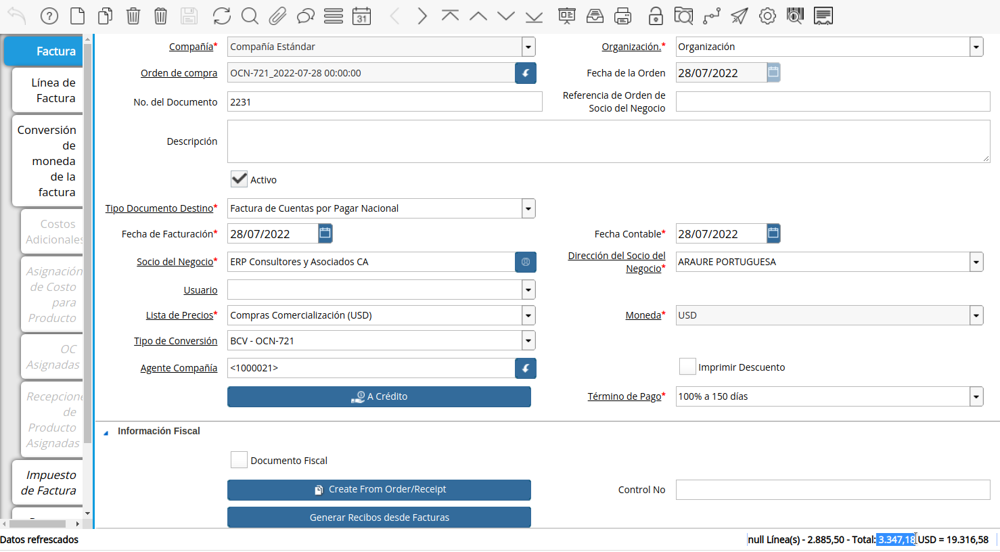

Conversión de Factura Automática
Cree una orden de compra de forma habitual con divisas, de no conocer el procedimiento puede consultar el material Registro de Orden de Compra Directa, para este ejemplo hemos realizado una orden con moneda USD.

Imagen 1. Orden de Compra
Cree un documento por pagar de manera habitual, de no conocer el procedimiento puede consultar el material Crear Factura desde Orden de Compra, para este ejemplo realizaremos una factura en BS para convertirla.

Imagen 2. Factura
Tome como salvedad los siguientes campos importantes para el proceso:
Seleccione la opción “Crear Desde Orden/Recibo”, para crear el documento por pagar desde una orden de compra.
Seleccione la orden creada inicialmente, al ejecutar el proceso verá que son cambiados automáticamente los campos “Lista de Precio”, “Moneda” y “Tipo de Conversión”.

Imagen 3. Lista de Precio
Proceda a cambiar de manera manual la “Lista de Precio” y el “Tipo de Conversión” de ser necesario, recuerde, que el “Tipo de Conversión” determina la tasa de cambio con la que se realizará la conversión del documento.
Ejecute el proceso “Recalcular Tasa Para Lineas de la Factura” que realiza la conversión del documento por pagar, ubicado en la barra de herramientas.

Imagen 4. Proceso Convertir Documento
La ejecución del proceso dejará como resultado las lineas del documento convertidas, los impuestos y el gran total, evitando así tener que realizar la conversión de forma manual.
Sabiendo que el ejemplo es de una Orden de Compra de 500 USD con un 16% de IVA quedando un total de 580 USD, al crear la factura y convertir con una tasa de 5,771 el resultado convertido debe ser 3.347,18.

Imagen 5. Factura Convertida